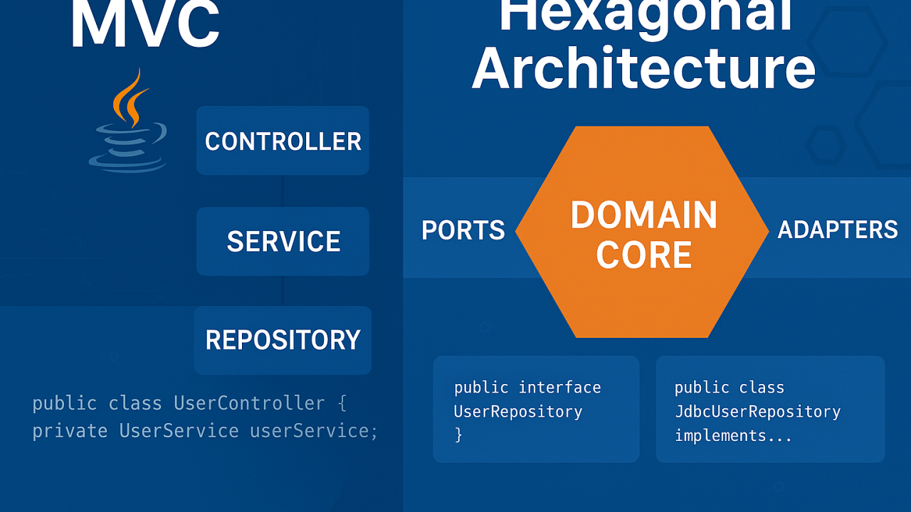

Do Mvc Para A Arquitetura Hexagonal - Uma Transição Necessária

Do MVC para a Arquitetura Hexagonal.
Desenvolvedor Java Sênior | Especialista em Back-end | Jakarta, Spring Boot, REST APIs, Docker | Engenheiro Químico
24 de julho de 2025
Por que inventaram a Interface?
No início da programação orientada a objetos, os desenvolvedores buscavam uma forma de criar sistemas mais flexíveis e fáceis de evoluir. Surgiu então a ideia de "interface": um contrato que define o que uma classe deve fazer, mas não como ela faz. Isso permitiu separar o "o que" do "como", facilitando a troca de implementações sem afetar o restante do sistema.
Imagine um sistema de pagamentos: você pode ter uma interface Pagamento e várias implementações --- cartão, boleto, pix. O código que usa a interface não precisa saber qual implementação está por trás, apenas que ela cumpre o contrato.
Essa ideia é a base da Arquitetura Hexagonal. Ao colocar interfaces (portas) entre o núcleo da aplicação e o mundo externo (adaptadores), garantimos que a lógica de negócio não dependa de detalhes de infraestrutura. Assim, mudamos bancos, APIs ou frameworks sem mexer no coração do sistema --- exatamente o que as interfaces sempre buscaram proporcionar.
Introdução
Durante muitos anos, o padrão MVC (Model-View-Controller) foi a principal escolha para estruturar aplicações web. Ele é simples, direto e fácil de ensinar. Mas conforme os sistemas crescem e as demandas mudam, muitos desenvolvedores se deparam com a necessidade de evoluir para arquiteturas mais flexíveis, como a Arquitetura Hexagonal (Ports and Adapters).
Essa transição, embora poderosa, traz confusões e desafios reais de entendimento.
O que é o MVC (Model-View-Controller)
O MVC separa a aplicação em três responsabilidades principais:
-
Model: Representa os dados e regras de negócio.
-
View: Camada de apresentação.
-
Controller: Lida com a entrada do usuário e coordena Model e View.
Essa estrutura funciona bem para aplicações simples e monolíticas. O problema começa quando o negócio exige integração com múltiplos serviços, testes de unidade eficazes, trocas de UI, APIs, filas, eventos etc.
Por que repensar o MVC tradicional
-
O Controller acaba assumindo responsabilidades demais.
-
Dificuldade de isolar a lógica de negócio para testes.
-
Forte acoplamento com frameworks web (Spring MVC, JSF, etc).
-
Problemas na manutenção com o tempo.
-
Camadas da aplicação conhecem demais umas às outras.
Introduzindo a Arquitetura Hexagonal
A Arquitetura Hexagonal, proposta por Alistair Cockburn, reorganiza o sistema com foco no domínio e na inversão de dependências. Ela separa a lógica central (o núcleo da aplicação) de tudo que é externo, através de portas (interfaces) e adaptadores (implementações).
Componentes principais
-
Domínio / Núcleo: Lógica pura da aplicação (independente de banco, web, etc).
-
Portas: Interfaces de entrada (driven) e saída (driving).
-
Adaptadores: Controladores HTTP, repositórios, mensagens etc.
Essa arquitetura permite:
-
Testar o domínio sem precisar de banco ou servidor web.
-
Substituir frameworks com impacto mínimo.
-
Ter múltiplas interfaces para o mesmo núcleo (REST, CLI, gRPC)* [Vide rodapé].
-
Clareza entre regra de negócio e infraestrutura.
Um exemplo simples
Em MVC
@RestController
public class PedidoController {
@Autowired PedidoService service;
@PostMapping("/pedidos")
public ResponseEntity criar(@RequestBody PedidoDTO dto) {
return ResponseEntity.ok(service.criar(dto));
}
} Em Hexagonal
public interface PedidoUseCase {
Pedido criar(PedidoDTO dto);
}
public class PedidoApplicationService implements PedidoUseCase {
private PedidoRepository repo;
public Pedido criar(PedidoDTO dto) {
// lógica de negócio aqui
}
}E no adaptador REST:
@RestController
public class PedidoRestAdapter {
private final PedidoUseCase useCase;
@PostMapping("/pedidos")
public ResponseEntity criar(@RequestBody PedidoDTO dto) {
return ResponseEntity.ok(useCase.criar(dto));
}
} Os desafios da transição
-
Desapego da estrutura em camadas (controller -> service -> repository)
-
Aprender a nomear portas, adaptadores e entidades de forma expressiva
-
Separar regras de negócio reais de lógica de infraestrutura
-
Evitar duplicação entre DTOs, entidades e objetos de domínio
-
Dominar a inversão de dependência com interfaces e injeção
-
Reeducar a equipe para pensar em termos de casos de uso
Conclusão
Migrar do MVC tradicional para a Arquitetura Hexagonal é uma mudança de mentalidade. Exige esforço, mas traz benefícios significativos em projetos complexos e de longo prazo.
Não se trata apenas de trocar nomes ou empacotar camadas de forma diferente. É um compromisso com uma arquitetura centrada no domínio, desacoplada e com maior foco na longevidade da aplicação.
Aos poucos, você perceberá que:
-
Seus testes ficam mais rápidos e significativos.
-
Seu código se torna mais expressivo e reutilizável.
-
Seu sistema se adapta mais facilmente a mudanças externas.
A pergunta não é mais "posso fazer isso com MVC?", mas sim: "minha lógica de negócio depende de algo que deveria ser externo?"
Autor: Christian V. Uhdre Mulato (GitHub)
LinkedIn: linkedin.com/in/chmulato
O que são essas tecnologias?
REST: Um estilo de arquitetura para APIs que usa HTTP para comunicação entre sistemas, geralmente em formato JSON.
CLI: Command Line Interface, ou seja, interface de linha de comando, onde o usuário interage com o sistema por comandos de texto.
gRPC: Um framework moderno de comunicação remota criado pela Google, baseado em HTTP/2 e Protobuf, eficiente para integração entre serviços distribuídos.